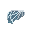
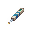
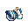

Guide to Ashwalkers
You are an ash walker, one among the plains. The land is bountiful of prey and sustenance, but foreign powers move to exploit your land. You must build up your tribe and expel these aliens from your home.
You are essentially a group of tribal Lizards who must craft low tech weapons and armor pick up weapons from the ground and loot corpses to fight off the more technologically advanced, but fewer in number, Human (or Lizard or Plasmaman) invaders.
For the Underground
Your base of operations is small and humble, its lifeblood: the ash walker nest, a tendril converted and tamed to rapidly grow Ash Walker eggs near instantly when fed. Whenever any dead biological corpse (Anything from Legion corpses to dead goliaths to miners) is brought next to the nest, it'll be consumed, its belongings and entrails scattered, and its blood used to feed the many eggs. Every pair of bodies sacrificed will produce a new egg, and with it the opportunity for a new member of the tribe.
Also inside the nest are two adorable little friends: Gubbuck and Guthen. These gutlunches are the tribe's cattle, and they are extremely precious. As the nest consumes corpses, it will spill gibs and organs everywhere; Gubbuck and Guthen will happily slurp these up, producing delicious, frothy milk to fill a bucket with and share with the tribe. You might need to give them a little kick to get them to eat; this is normal, gutlunches don't typically get hungry unless they need to patch themselves up. Alternatively, you can hold these fussy eaters over the food till they start eating. Also, the milk happens to be a Saline-glucose solution, so it'll veeeery slowly heal those who drink it, and you can even use it as replacement blood in a pinch.
Outside there are a few small building, one with basic equipment for combat and farming, the other holding more advanced items, some necessary for exploration, and loot your tribe collected from past raids. Around the area you'll find a bonfire that can smelt ores, and a small garden where you can grow mushrooms.
The village and nest must be protected at all costs, its destruction would spell doom for your tribe.
Foreign Invaders
The Nanotrasens/Sydicates/Golems were driven off long ago or have killed each other. You and your descendants should be safe from foreign invasion.
Foreign weapons are too complicated to understand. Even if they were could be used, years of evolution have left the weapons too big for the hands of an ashwalker. As such you cannot use them. Except the mining axe they call the "crusher."
The Wildlife
In order to grow and prosper you must find and hunt down the wildlife of this land, for sustenance, reproduction and resources. The main reason to hunt the wildlife is to acquire bones and sinew, these resources are critical in crafting the more advanced tribal gear on offer to you. Please note that animals can't see you while you're in the room containing the tendril, so you can hide there if something goes wrong.
- Legions: The easiest prey, their attacks deal low damage and they are weak to your spears. The greatest advantage of the legions are their souls and their host. The host can be returned and reborn as an Ash Walker, while their Souls can be used for healing, or implanted to make them last. These creatures sadly do not drop crafting materials.
- Watchers: Deadly creatures, they should never be approached alone. Their freeze attacks will slow you in place while they rip you to shreds. Attack in numbers. Watchers drop the coveted sinew, which is a necessary component for crafting higher tier weapons and armour. They also drop a single piece of bone.
- Goliaths: Powerful creatures, but easily kited and killed by a skilled warrior. Do not allow them to stick you in place, keep mobile and rapidly move in, hit them, then move back. These creatures are a good prize to kill and can be killed by a single warrior. They are a worthy prey as they drop two bones and a goliath plate upon death.
- Megafauna: Don't. Just stop. You'll get annihilated and possibly lure the beast to your nest, killing everyone.
Tribal Equipment
The following is a list of tribal equipment you can craft
Your Starting Gear
- You get a Syndicate Toolbox, useful if you want to take the fight to the mining base
- You also happen to get a Rapid Construction Device (RCD), also handy for breaking into a place in a pinch.
- You get an AI Combat Upgrade also. Firstly, this makes your tendril rather enticing for miners, as it gives the Station AI all the powers that a Malfunctioning AI would have, without the whole plasma flooding and killing part of the equation. If you can somehow get an AI onto the station z-level which is subverted to you, and has a combat upgrade installed, fun things will happen.
How to make bowstring
- Create a loom with 10x wood.
- Create cloth with cotton by clicking on the loom with the cotton.
- Create silk with cloth by clicking on the loom with the cloth.
- Create silk string with silk by clicking on the loom with the cloth.
- Use the silk string in the bow crafting recipe.
- Repeat.
Farming
Getting dirt
First things first, you need dirt:
- Use a pickaxe or a shovel on the ground to get sand (9 tiles will last a long time).
- ‘Use’ the sand (‘z’ key by default) to create sandstone.
- Stand over where you want your dirt plot and ‘use’ the sandstone to create a dirt plot.
Growing Plants
Here is how to grow without hydroponics, plant analyzers, seed vendors, water, or fertilizer:
- Insert plant into seed extractor.
- Right click the seed extractor and select ‘activate seed extractor’.
- Create a fresh dirt plots (see above) and plant your seeds.
- Wait for the plants to fully grow.
- Left click on the plants to harvest.
- Destroy dirt plots with the shovel.
- Repeat.
Important: Destroy the plot after you harvest (click on it with your shovel), the nutrients and water that are full upon creation deplete over time. It is best practice to make a new plot for every seed you plant. This includes pre-generated plots, don't use them, destroy them.
Making Cactus Juice
Lavaland Cactus contain Vitrium Froth, a useful healing juice. It has a 80% chance to heal 1 burn and 1 brute damage each tick. To make it:
- In the crafting menu under tribal, create a wooden barrel (30 wood planks).
- Left click on the barrel to open it.
- Insert lots of File:Cactus product.pngLavaland Cactus
- Left click on the barrel to close it.
- Click on barrel with a receptacle to transfer the cactus juice.
Lavaland Medicine
Healing methods
You don't got time to bleed. Heal up and get back out there, the tendril needs bodies. Things that will heal you:
- Vitrium Froth from eating:
- Gutlunch Milk. You may have noticed a couple beetle-like creatures moving around your tendril. These little guys eat the refuse of the sacrifices you make, and in time produce either bug cream or milk that heals. To gather milk simply help intent them with a reagent container. Bug cream can be used to make bug cheese with the help of lavaland flora.
- Grub Juice. By butchering gold grubs, you can grind their guts to produce Grub Juice.
- File:Legionsoul.gif Legion Souls instantly heal 25 brute and burn damage. But it's true advantage is if you can get it implanted with Organ Manipulation it will instantly heal you if you go into crit.
- Improvised bandages. Made from torn cloth from clothing. Plain bandages heal brute, soaked bandages heal burn. Bandages will heal then fall off when done turning red. You can wash used bandages to use them again, but every time they are reused their effectiveness is halved.
- Tribalordrazine is good for when you are low on cactus, since it can turn normally useless mushroom stems and ash into extra healing that also won't make you fat. The best way to make it is to grind up 2 cacti, 2 mushroom stems, an ash pile, and then heat it up to 420K with a welder. Tribalordrazine heals brute, burn, and oxygen damage.
- Capmix is good for getting rid of nutrients when you are fat and for when you have toxin damage. It can be made by grinding together a mushroom cap with ash and heating it to 420K with a welder.
Surgery Tools
| Surgery Instrument | Available at Nest |
|---|---|
| Drapes | |
| Glass Shard (craft) | |
| Cautery | |
| File:Drill.pngSurgical Drill | |
| Circular Saw | Bone Axe (craft) |
| File:Medspray.png Sterilizer | File:Polypore product.png Polypore Juice (contains Ethanol) |
Note: Improvised surgery tools have inherent failure chances, you may have to use tools multiple times until they succeed. You can help mitigate this by using Polypore juice from brewing, this will increase success chances by 10%.
Boat to the endless sea
Sometimes you will find a giant boat. Maybe you killed everyone from the boat, maybe it was abandoned. Either way, you should strip the boat of anything useful. You have no interest in the outside universe, after all, this is your homeland, and you must protect the tendril at all costs. This all changes if you are a medieval ashwalker.


{kind=link}
{kind=link}
{kind=link}
{kind=link}
{kind=link}
{kind=link}